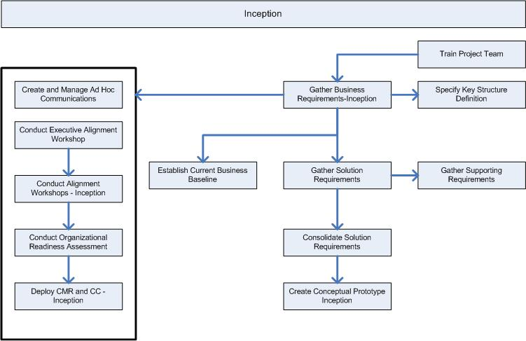

OUM |
Phase Overview |
||
Method Navigation |
Current Page Navigation |
||
|
|
||||||||
The overriding goal of the Inception phase is to have concurrence among all stakeholders on the lifecycle objectives for the project. The Inception phase is critical for all projects because the scope of the effort, the high-level requirements and the significant risks must be understood before the project can proceed.
The Inception phase is used to kick off a project, review the strategic direction of the business, and confirm, document, and prioritize the high-level business requirements for the project. It is also the time to begin assembling and integrating the project team, to scope the entire engagement, and develop the initial project plan.
The business objectives, goals, and scope of the project are defined and the project’s feasibility is established during requirement gathering activities that produce the high-level business models. As requirements are defined, they are also prioritized in relation to their business benefits. Where applicable and possible, the functionality is partitioned to enable parallel development by separate teams of ambassador users and highly skilled Information Technology (IT) professionals. Potential risks are identified and and mitigation strategies for each risk are developed. The Project Management Plan is used to define the overall work to be performed on the project. An Iteration Workplan is developed to define the details of the work to be performed in the first Iteration of the Elaboration phase.
For projects focused on enhancements to an existing system, the Inception phase is more brief but is still focused on validating that the project is both worth doing and reasonable.
The Inception phase finishes with the Lifecycle Objective Milestone. Review and be familiar with the objectives of this milestone before you begin this phase and make sure you have met these objectives before you move to the Elaboration phase.
This phase overview is written from the perspective of a Full Method View, utilizing ALL of the processes, activities and tasks in this phase. Therefore, all of the following sections provide comprehensive information. If your project is utilizing a tailored approach (for example, Technology Full Lifecycle View, Application Implementation View, Middleware Architecture View), not everything in this overview may be appropriate for your project. Please keep this in mind, especially when reviewing the Prerequisites, Processes, Key Work Products, Tasks and Work Products and Task Dependencies sections. You should use OUM as a guideline for performing all types of information technology projects, but keep in mind that every project is different and that you need to adjust project activities according to each situation. Do not hesitate to add, remove, or rearrange tasks, but be sure to reflect these changes in your estimates and risk management planning. You should also consider the depth to which you address and complete each task based on the characteristics of your particular project or project increment. See Oracle's Full Lifecycle Method for Deploying Oracle-Based Business Solutions for further information on the scalability and adaptability of OUM.
The following is a list of the objectives of this phase:
The Inception Phase / Lifecycle Objective (LO) Milestone Checklist is available to assist with determination of completeness for this phase.
The following processes are active in this phase:
Refer to Key Work Products for a complete list of key work products for OUM.
This section discusses the primary techniques that may be helpful in conducting the Inception phase. It also includes advice and commentary on each process.
Within this process you define the high-level functional and supplemental requirements, and determine the scope and prioritize it. Use workshops for all these activities. The workshops that are used in this phase will be high-level facilitated workshops where a lot of brainstorming occurs. Therefore, techniques that allow this kind of activity can be successfully used (for example, brown bag sessions). The preparation of the workshops is vital to their success. The facilitator (workshop leader) should perform some investigation prior to the workshops to make them as effective as possible. More information about workshop techniques can be found in the Workshop Techniques Handbook.
It is also important to understand the organization's culture. For example, are they used to speaking out, or are there normally a lot of political factors that restrict the free exchange of ideas. Prepare the workshop appropriately (for example, an open approach will provide very little input in an atmosphere where speaking out is restrictive). It is important that the participants feel secure during the session. The high-level requirements should be prioritized following the MoSCoW principle, resulting in a MoSCoW List that that contains the prioritized requirements. The MoSCoW List contains the Must Have, Should Have, Could Have and Won't Have requirements. The Must Have functionality is the functionality that is vital to the business and hence Must be developed. The Should Have functionality is important, but not vital, the Could Have functionality is the functionality that is nice to have, but not really important, and the Won't Have functionality is functionality that should not be developed as part of this project. There is a sample Use Case Model, accessible from the RA.023 task overview that can be used to accelerate the requirements gathering process.
In the Requirements Analysis process, the requirements captured during Business Requirements are analyzed and the functional requirements are transformed and structured into a Business Use Case Model. Use Case Models are used to document the requirements of the system in detail, for the business as well as the project team. During the Inception phase, you should not describe every use case in detail. This is neither necessary nor reasonable, as many use cases will evolve through the phases. The users should be involved in developing the Business Use Case Model, as it they can provide the best input to give a more precise understanding of the requirements. It might be useful to use workshops to collect the missing pieces in the requirements that we need to form the Business Use Case Model. It all depends on the level of detail and accuracy of the requirements captured in the Business Requirements process.
In the Mapping and Configuration process, you establish the values for the key structural elements in the applications (for example, Multi-Org, Trading Community Architecture (TCA), Chart Of Accounts (COA) structures) that are relevant to your particular implementation.
Most of the work in the Implementation process is performed in the Construction phase, however it is important to try to show the users our early understanding of the requirements. This can be done by creating one or more Conceptual Prototypes. In larger projects, probably more prototypes will be created (for example, one for each subsystem). A Conceptual Prototype is a mockup prototype that reflects the functional requirements known at the time, based on the decisions made during the workshops. There might very well be known requirements with lower priorities that have not been prototyped, because the end of the timebox was reached before the completion of these requirements. The Conceptual Prototype is used as a communication tool between the ambassador users and the project team to determine any additional requirements and to verify the implementation team's understanding of existing requirements. At this point, the prototype may consist of drawings using, for example, PowerPoint slides, illustrating the user interface, what kind of functionality the application will provide, and so on. Moreover, some programming work may occur in this phase, for example, to create "proof of concept" prototypes, to do programming experiments for key technical questions, to validate technical ideas or to explore the technical feasibility of special requirements.
This process emphasizes a common planning approach to testing the business requirements embodied in the new application system. It advocates the reuse of testing scripts and test data in successively larger and larger portions of the application system. The intent of the Testing process is to provide a formal and effective approach to the challenge of testing. The Testing approach is integral to the entire development effort, for example by performing unit testing, and structuring it to build upon itself. If done well, it results in high quality software and early delivery of a dependable system, delivering real business benefits.
The Testing process first identifies the Testing Requirements (such as the form and scope of test reports) and then refines them through to the end of the project. It attempts to take full advantage of all opportunities that contribute to the identification of the Testing Requirements. For example, you identify business scenarios while developing the Use Case Models, and they contribute to system, and systems integration testing. Functional modeling produces testing requirements that are specific to a detailed use case or business process. User interface testing is performed with reference to the Validated User Interface. The Supplemental Requirements work product identifies supplemental requirements in such areas as security, from which you plan supplemental testing of partitions and the complete system. The Testing Requirements should also include requirements related to acceptance testing including statements concerning the implications for acceptance testing.
At the earliest possible date, the lead tester should initiate a procurement process for testing tools. This issue is best raised in response to the customer organization's statement of testing requirements.
The objective of the Performance Management process is to proactively define, construct, and execute an effective approach to managing performance throughout the project implementation lifecycle in order to ensure that the performance of the system or system components meet the user's requirements and expectations when the system is implemented. Performance Management is not limited to conducting a performance test or an isolated tuning exercise, although both those activities may be part of the overall Performance Management strategy.
Performance Management starts off with conducting a Performance Management Workshop. The Performance Management workshop familiarizes the customer with the concepts of proactive performance management, the need to define performance requirements for business critical transactions, establishment of metrics and monitoring related to performance management, Service level Agreements (SLA) and the appropriate use of performance testing. The workshop also provides a mechanism to gather information on performance needs and expectations that should be used to develop the Performance Management Requirements and Strategy (PT.020).
The Technical Architecture process starts off by conducting a Technical Architecture Workshop. The workshop is intended to familiarize the customer with the reference architectures already established, options and features available and to gather high level architecture, availability, integration, reporting, backup and recovery, security and disaster recovery requirements. The workshop also provides a mechanism to gather information on architecture in place and any strategic initiatives or enterprise standards that the project architecture must fit within.
This process relies on the work products from the Business Requirements process. If possible, members of the conversion team should actively participate in this process to establish a good understanding of future business requirements. In addition, this team needs to look into the existing systems that should be converted. Document the Data Conversion Requirements in this phase. Data conversion can be a costly and labor-intensive effort. Raise conversion exceptions as management issues. They should not be solved prior to understanding their benefit to the business.
Quality documentation is a key factor in supporting the transition to production, achieving user acceptance, and maintaining the ongoing business process. During Inception, this process gets started with the documenting of the Documentation Requirements and Strategy. This work product will drive this process throughout the project.
Organizational Change Management focuses on the use and acceptance of new application system by all users and the optimization of organizational performance. Inherent in every technology change is the opportunity to become a stronger, more cohesive organization; a more efficient performer; a more agile competitor.
During Inception, communication is started quickly to keep stakeholders informed. Various workshops with targeted audiences are conducted to start preparing the organization for the adoption of the new system. Organizational Change Management provides a structured approach that addresses the human and organizational acceptance and use of new applications. Organizational Change Management increases the organization’s return on investment by reducing the risks of implementing applications, increasing the productivity of all user groups, and assisting the organization to reach peak performance with the new business system. The more quickly and effectively the business can adopt new technology, the more productive and competitive is the organization. A Sponsorship Program is put in place to cascade (or sponsor) the involvement throughout the organization and a Change Readiness Assessment is conducted. Ongoing throughout the project and starting in the Inception phase, change and communication events targeted to specific audiences with the goal of mitigating identified risks and challenges are conducted.
During Inception, the objective of the Training process is to train the project team to begin the tasks necessary to start the project.
If you are using a Scrum approach, use the Managing an OUM Project Using Scrum technique. You can also go directly to the Inception phase Scrum guidance within this technique.
This phase includes the following tasks:
| ID | Task | Work Product |
|---|---|---|
Business Requirements |
||
RD.001 |
Detail Business And System Objectives | Business and System Objectives |
RD.003 |
Identify Viewpoints | Viewpoints List |
RD.005 |
Create System Context Diagram | System Context Diagram |
RD.011.1 |
Develop Future Process Model | Future Process Model |
RD.012 |
Document Present And Future Organization Structures | Present And Future Organization Structures |
RD.015 |
Determine KPI Collection and Reporting Strategy | Key Business Strategies and Objectives |
RD.020 |
Obtain High-Level Business Descriptions | High-Level Business Descriptions |
RD.030 |
Develop Current Business Process Model | Current Process Model |
RD.034 |
Document Current Business Baseline Metrics | Current Business Baseline Metrics |
RD.042.1 |
Develop Glossary | Glossary |
RD.045.1 |
Prioritize Requirements (MoSCoW) | Moscow List |
RD.055 |
Detail Supplemental Requirements | Supplemental Requirements |
RD.065 |
Develop Domain Model (Business Entities) | Domain Model |
RD.070 |
Determine Audit and Control Requirements | Audit and Control Requirements |
RD.130.1 |
Develop Baseline Architecture Description | Architecture Description |
RD.134 |
Identify New Software Release Changes | Software Release Changes Summary |
RD.136 |
Perform Custom Extension Impact Analysis | Custom Extension Impact Analysis |
RD.138 |
Perform Data Impact Analysis | Data Impact Analysis |
RD.140.1 |
Create Requirements Specification | Requirements Specification |
RD.150.1 |
Review Requirements Specification | Reviewed Requirements Specification |
Requirements Analysis |
||
RA.010 |
Simulate Business Process | Business Process Simulation |
RA.015 |
Develop Business Use Case Model | Business Use Case Model |
RA.019 |
Define Project Reference Architecture | Project Reference Architecture |
RA.021.1 |
Capture User Stories | User Story |
RA.023.1 |
Develop Use Case Model | Use Case Model |
RA.025.1 |
Identify Candidate Services | Service Portfolio - Candidate Services |
RA.027.1 |
Identify Candidate Business Rules | Candidate Business Rules |
RA.028.1 |
Populate Business Rules Repository | Populated Business Rules Repository |
RA.030.1 |
Validate Conceptual Prototype | Validated Conceptual Prototype |
Mapping and Configuration |
||
MC.010.1 |
Define Business Data Structures | Business Data Structures |
MC.020 |
Define Business Data Structure Setups | Business Data Structure Setups |
MC.090.1 |
Conduct Reporting Fit Analysis | Reporting Fit Analysis |
Implementation |
||
IM.005.1 |
Develop Conceptual Prototype | Conceptual Prototype |
Testing |
||
TE.005.1 |
Determine Testing Requirements | Testing Requirements |
Performance Management |
||
PT.010 |
Conduct Performance Management Workshop | Performance Management Workshop Results |
Technical Architecture |
||
TA.004 |
Perform Technical Architecture Impact Analysis | Technical Architecture Impact Analysis |
TA.010 |
Conduct Technical Architecture Workshop | Technical Architecture Workshop Results |
Data Acquisition and Conversion |
||
CV.010 |
Define Data Acquisition and Conversion Requirements | Data Acquisition and Conversion Requirements |
Documentation |
||
DO.010 |
Define Documentation Requirements and Strategy | Documentation Requirements and Strategy |
Organizational Change Management |
||
OCM.010 |
Create and Manage Ad Hoc Communications | Ad Hoc Communications |
OCM.020 |
Prepare for Executive Alignment Workshop | Executive Alignment Workshop Materials |
OCM.030 |
Conduct Executive Alignment Workshop | Executive Business Objectives and Governance Rules |
OCM.040 |
Build and Deploy Sponsorship Program | Sponsorship Program |
OCM.050 |
Prepare for Team-Building Workshop | Team-Building Workshop Materials |
OCM.060 |
Conduct Team-Building Workshop | Cohesive Project Team |
OCM.070 |
Design Managers Project Alignment Workshop | Managers Project Alignment Workshop Materials |
OCM.080 |
Conduct Managers Project Alignment Workshop | Aligned Managers |
OCM.090 |
Design Change Agent Workshop | Change Agent Workshop Materials |
OCM.100 |
Conduct Change Agent Workshop | Enabled Change Agents |
OCM.110 |
Develop Change Readiness Assessment Strategy and Tools | Change Readiness Assessment Strategy and Tools |
OCM.120 |
Conduct Change Readiness Assessment and Analyze Data | Change Readiness Assessment Analysis and Recommendations |
OCM.130 |
Build Communication Strategy and Change Management Roadmap | Communication Strategy and Change Management Roadmap |
OCM.140 |
Develop Communication Campaign | Communication Campaign |
OCM.150.1 |
Conduct Change Management Roadmap and Communication Campaign | Change Management Roadmap and Communication Events |
Training |
||
TR.010.1 |
Define Training Strategy | Education and Training Strategy |
TR.020 |
Prepare Project Team Learning Plan | Project Team Learning Plan |
TR.030 |
Prepare Project Team Learning Environment | Project Team Learning Environment |
TR.040 |
Develop Project Team Learningware | Define Training Strategy |
TR.050 |
Conduct Project Team Learning Events | Skilled Project Team |

The most likely areas of risk in the Inception phase are the following:
These factors have been shown to be critical to the success of this phase:

Copyright © 2006, 2016, Oracle and/or its affiliates. All rights reserved.